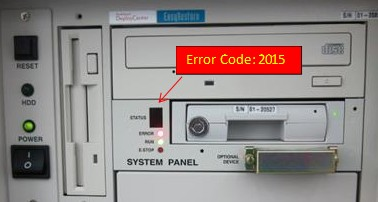
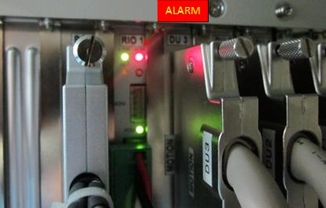
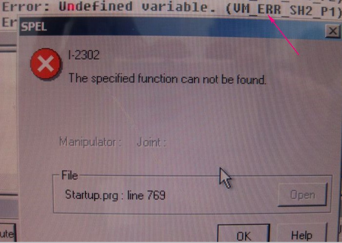

Service History
Subject: NS-UBS encounter one error 2015 at the System Panel
Handler Model: NS-UBS (UBS02, S/N: 15932 ) also know as UBS-P008 in AMD Penang
Controller: RC520 (CPU Board SPI-6941)
Date: 12 June 2013
Symptom
NS-UBS 002 encounter error 2015 at the RC520 System Panel.
Error 2015 is "The (Input or Output) Port No. entered is out of available range."
Description & Fix:
There is no hardware settings made for the specified User I/O.
Check on the number of connected Drive Units and expanded I/O Boards connected.
|
 |
 |
S/N: 15932, config as below:
a) Drawer for empty tray
b) Vacuum for Tray Arm
c) Automat 14 slot
d) No PCI COM-PO 32/32 card, but going to install
Action
Advise by email:
The important thing to note/change is to make sure that Contec PO-64L(PCI) address in Windows 2000 is the SAME as SPEL Output I/O Board address.
Eg for UB#17 the Contec PO-64L(PCI) address in Windows 2000 is EC00 so this same address is key into the SPEL Output I/O Board address for 7Segment LED(for Bining display in UBS).
By right, installing Contec COM-2(PCI)H/COM-2(PCI) should not affect the Contec PO-64L(PCI) address in Windows 2000.
Also the adding of Contec COM-2(PCI)H/COM-2(PCI) does not affect the Remote I/O board unless there is conflict in addressing.
Did you try to Reset the Remote I/O board?
To reset the Remote I/O Board:
1) Front Operation Panel is Power ON
2) Press & Hold the SET button on the Remote I/O Board(behind RC520) until set LED(yellow) turns on
3) Release SET button, check that SET LED is ON for a few seconds and turns OFF.
13 Jun 2013
Customer informed that original Remote I/O Board faulty as customer swapped Remote I/O Board but it is not related to Error 2015.
As there was no other UBS in Penang, it was not possible to swap RC520 to determine if it was RC520 problem or DU or any other part of the UBS having problem.
14 Jun 2013
Sent by email UBS02 EPSON factory backup to AMD Penang.
After using the SPEL Restore but still error 2015.
This was also same even when customer restore the backup SPEL System after HDD Recovery CD.
16 Jun 2013
Items done by Chuah:
- Press Home button for homing the handler, error message 2015 appear by looking at Control Unit status digital display.
- Swap the HDD, original HDD swap with spare HDD. (Control Unit didn't swap.)
- Error message 2015 didn't appear on Control Unit status digital display.
- After then use Recovery CD (Version 2.3b.) to recover the spare HDD. (Successfully no blue screen.)
- Installing SPEL to MMI. (Version 13.22.)
- Performing restore backup by using Hong last backup from last Monday. (Restore backup "AllProject" and "System".)
- Press Home button for homing the handler, error message 2015 appear by looking at Control Unit status digital display.
- Check the Control Unit cable connection, found out "DU2 & DU3" cable miss-swap, swap back "DU2 & DU3" cable.
- Check the [SPEL Hardware Setting] "MIB" address.
- Press Home button for homing the handler, error message 2015 appear by looking at Control Unit status digital display.
- Suspect Hong's backup got problem, performing recovery by using Recovery CD (Version 2.3b.) again. (Successfully no blue screen.)
- Installing SPEL to MMI. (Version 13.22.)
- Restore Hong's backup again. (Restore backup "AllProject" only.)
- Performing MCAL on each manipulator, all manipulator can be perform MCAL successfully. Except manipulator 2 "Input Arm", after executing MCAL on manipulator 2, Input Arm just hang and didn't move at all. (Check the Input Arm, nothing stuck at Input Arm.)
- Performing MCORG at all robot, all robot and axis, successfully. Except robot Input Arm, after execute MCORG and MCAL on Input Arm, error message appear "T-4040 Communication error with the Pulse Generating Board."
- Next step want to restore backup from you. Restore "Config", "Sysback" and "NSUBS1". And reboot the SPEL having this error message "I-2302 The specified function can not be found." Attachment is the example.
- Try homing handler, MMI display show "Running" but handler just hang and didn't move.
It seem now MAYBE only error is "I-2302 The specified function can not be found." but no Error 2015 after restore "Config", "Sysback" for SPEL System and "NSUBS1" SPEL Project for USB after using UBS Recovery CD.

17 Jun 2013
Request to:
1) HDD Recovery by Recovery CD Version 2.3b. but do not restore Project and System files.
2) In SPEL, and Close project (such that you do not see any windows. programs all closed). You should be able to see project name at top left corner before you close the project.
3) In SPEL, delete this project using Project->Delete.
4) After delete project, please install MMI only. This will also install back the SPEL project
5) Copy back the SPEL Pos
6) In SPEL, do System restore
18 Jun 2013
What was done was:
- Use UBS Recovery CD to recovery hdd
- Close SPEL project
- Delete SPEL project
- Install MMI again which will also install SPEL project
- Restore DU data
- MCORG all axes
- copy back backup SPEL pose data from EPSON backup
after that able to HOME by pressing HOME button.
Cause
For Error 2015, it could be that by installing MMI which also copy project into SPEL project but not all files are overwrite or updated during the MMI installation.
Remarks